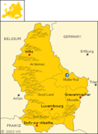

De: La Frikipedia, la enciclopedia extremadamente seria.
De: La Frikipedia, la enciclopedia extremadamente seria. De: La Frikipedia, la enciclopedia extremadamente seria.
| De la serie Países del planeta tierra: | |||||
| Grand Douche de Luxemburg Gran Mojón de Luxemburgo | |||||
|---|---|---|---|---|---|
| |||||
| Lema: Mmmm...Queso!!! | |||||
| Himno: Holland!!!
| |||||
| 
| |||||
| Capital | Luxemburgo | ||||
| Mayor ciudad | La ciudad de al lado de Luxemburgo | ||||
| Lenguas oficiales | Braile | ||||
| Gobierno | Dukado | ||||
| Duque | Los de Hazzard | ||||
| Área | 1000 km² | ||||
| Población | 5 mil habitantes o menos | ||||
| Moneda | Lero luxemburgués | ||||
| Zona horaria | +-+-+45 | ||||
| Dominio Internet | .lx | ||||
| Código telefónico | 0,5
| ||||
| Mirad, nuestra bandera se parece a la de Holanda | |||||
Luxemburgo es un ducado de Hazzard, gobernado mediante la Union Europea que se siguen preguntando si vale la pena decirle a los Duques de Hazzard que es un país de juguete como el País de Nunca Jamás o Neverland de un pederasta Michael Jackson. Se cree que esta entre Bélgica, Francia y Alemania. Forma parte del benelux(Belgium, Netherlands and Luxembourg, para los gilipollas).
Siempre amanece a las 4 PM y se pone el ocaso a las 7:05 PM, así que duermen bastante los luxemburgueses y follan mucho.
LUXemburgo, te dice todo, pero para los canis y gilipollas, significa Luxury(Lujo) y burgo de hamburguesas, asi que creo que se exportan hamburguesas de Lujo, también le mandan hagua a Emolandia, para que se refresquen mientras siguen llorando junto a Tim Burton.
Todos los luxemburgueses tienen $90,000.00 de salario minimo.
Por caprichos, los Duques de Hazzard, hicieron la pelicula que salio hace algunos años atrás, protagonizado por ellos, claro está. De ahí no hay mucho que decir, ya que no hay cosas que hacer en Luxemburgo.
Se creía que en los años 50, un equipo ingresó a la Champions Lig, el noseque FC de Luxemburgo, pero quedo comprobado que su furbo es a base de puros sobornos a arbitros, que son los segundos más millonarios del país, después de los Duques. Porque si no es así, Dios mata a un gatito... y no queremos que eso pase :'(
No le digan esto a nadie, pero ...Luxemburgo compra barriles de gasóleo a $0.05 x barril. Lo hizo el Premier Ministro de Luxemburgo asi que ... shhht!
Véase aquí
Al no saber acerca de Luxemburgo...patada en los cojones
  Imperios de Europa Imperios de Europa
|
|---|
| Eslovaquia |
Autor(es):